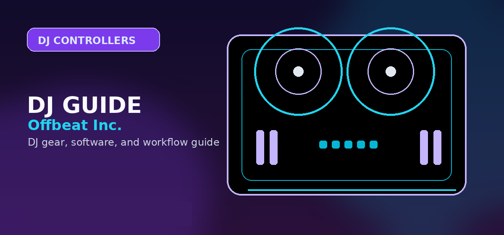

AlphaTheta DDJ-GRV6 Review
A full DDJ-GRV6 review for DJs comparing AlphaTheta’s four-channel Groove Circuit controller against FLX4, FLX10, Serato controllers, and standalone systems.

Disclosure: This page uses affiliate links. We may earn a commission at no extra cost to you. Full disclosure →
A full DDJ-GRV6 review for DJs comparing AlphaTheta’s four-channel Groove Circuit controller against FLX4, FLX10, Serato controllers, and standalone systems.
DDJ-GRV6 verdict
The DDJ-GRV6 is the current-model page Offbeat needed because it sits exactly between ordinary beginner controllers and expensive flagship setups. It is not just “a bigger FLX4.” Its purpose is four-channel creative mixing, club-inspired layout, CDJ-sized jog feel, Beat FX, Groove Circuit in rekordbox, and Serato DJ Pro compatibility with Stems FX context.
Recommendation
Buy the GRV6 if you already know two-channel beginner controllers feel limiting and you want a creative four-channel controller without jumping to standalone flagship pricing. Skip it if you are still learning basic mixing or if you mainly need a cheap, compact first controller.
What makes the GRV6 different
The GRV6 is strategically important because it gives AlphaTheta a current four-channel controller story below the most expensive end of the market. The Groove Circuit feature lets rekordbox users swap and manipulate drum parts for live-remix style performance. Serato DJ Pro users get a different value proposition through Stems FX. This makes the controller more interesting than a generic midrange spec bump.
Strong points
- Four-channel layout for layering tracks, loops, acapellas, and effects.
- Club-inspired control positioning and larger jog-wheel feel.
- Groove Circuit for rekordbox creative remixing.
- Serato DJ Pro compatibility for Stems FX workflows.
- Better fit for ambitious home practice than entry-level controllers.
Weak points
- Too much controller for many day-one beginners.
- Groove Circuit value depends heavily on rekordbox workflow.
- Still requires a computer, unlike standalone systems.
- Buyers focused on club USB workflow may eventually want XDJ/CDJ-style hardware.
GRV6 vs FLX4 vs FLX10
| Controller | Best buyer | Why | Risk |
|---|---|---|---|
| DDJ-FLX4 | Beginner who wants the safest first serious controller | Simple, cheaper, and enough for real learning | Can feel limiting after the basics |
| DDJ-GRV6 | Creative step-up DJ who wants four channels and remix tools | Groove Circuit, bigger layout, and modern AlphaTheta positioning | May be overbought by beginners |
| DDJ-FLX10 | More advanced rekordbox/Serato users who want flagship controller features | Higher-end performance and pro-oriented feature set | Costs enough to make standalone alternatives tempting |
Who should buy the GRV6?
The GRV6 is best for DJs who already practice regularly, want to experiment with loops and acapellas, care about creative transitions, and want a controller that feels more club-inspired than a small beginner unit. It should be routed from best controllers under $1,000, best rekordbox controllers, and best Serato controllers, not from the “absolute beginner” page as the default first recommendation.
Review positioning
The GRV6 review should frame the controller as a creative step-up, not a beginner default. It matters because it gives the site current AlphaTheta coverage between small starter controllers and expensive flagship systems. The Groove Circuit feature also creates a distinct editorial angle that separates the GRV6 from generic four-channel controller copy.
The most qualified buyer is already practicing and wants more channels, larger controls, remix-style drum manipulation, and a controller that feels more performance-oriented. The least qualified buyer is a day-one learner who has not yet learned phrasing, gain staging, cueing, or speaker setup.
Next-step decisions should include under-$1,000 controllers, rekordbox controllers, Serato controllers, and standalone systems. That makes the GRV6 a decision node in the controller ladder instead of an isolated review.
GRV6 setup and upgrade path
The GRV6 makes the most sense as a serious home-practice and performance controller. It gives you more space than beginner controllers and pushes you toward four-channel thinking, but it still depends on a computer or compatible mobile workflow. DJs who want laptop-free performance should compare standalone systems instead.
Choose the GRV6 when the goal is learning layered mixing, club-inspired layouts, and creative performance features. Choose the FLX4 if you are still learning basics. Choose the FLX10 if you want a more advanced flagship-style controller with deeper performance controls.
Where the DDJ-GRV6 fits in the lineup
The DDJ-GRV6 is for DJs who want a more creative four-channel workflow without jumping straight to a standalone system. Its value is strongest for rekordbox users who will actually use Groove Circuit and performance controls rather than treating it as a larger beginner controller.
Official product and support pages
The GRV6 is mainly a performance-layout controller, not a first-controller default.
It makes sense if you want deeper pad/stem workflow without buying a standalone unit.
Compare software unlocks and channel needs before paying more than FLX4 money.
Use these official pages to confirm current specifications, software compatibility, and support details before buying.
Frequently Asked Questions
Is the DDJ-GRV6 good for beginners?
It can work for motivated beginners, but it is better as a step-up controller after the basics. Most beginners should start with FLX4 or FLX2.
Does the DDJ-GRV6 work with Serato?
Yes, it works with Serato DJ Pro and supports a Serato Stems FX workflow according to AlphaTheta’s product positioning.
What is Groove Circuit?
Groove Circuit is a rekordbox-focused feature for live drum remixing, including replacing or manipulating drum parts during performance.
What should I check before buying this DJ controller?
Confirm software compatibility, audio outputs, headphone cueing, driver support, and whether the controller fits your real practice or gig setup.
Is this controller category good for beginners?
It can be, but beginners should prioritize reliable software support, simple routing, and controls that teach transferable DJ habits before paying for advanced performance features.